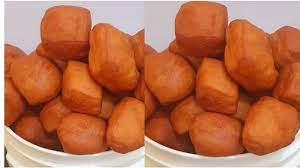

Kenyan Maandazi

Description
Mandazi, is a form of fried bread that originated on the Swahili Coast.
It is also known as bofrot or puff puff in
Western African countries such as Ghana and Nigeria.
It is one of the principal dishes in the cuisine of the Swahili people
who inhabit the Coastal Region of Kenya and
Tanzania
Ingredients
- 1 cup warm milk
- ¼ cup vegetable oil
- ¼ cup fine white sugar
- 1 medium egg
- 2 teaspoons instant yeast
- ½ teaspoon salt
- ½ teaspoon ground cardamom
- 3½ cups all-purpose flour, sifted
- vegetable oil for deep frying
Steps
- Combine milk, 1/4 cup vegetable oil, sugar, egg, instant yeast, salt, and
cardamom in a large bowl. Mix in flour, 1 cup at a time, until dough comes
together and is easily handled. Knead dough on a flat work surface until no longer sticky.
- Put dough back in the bowl, cover, and let rise in a warm area until doubled, about 1 hour.
- Press dough down gently. Knead it briefly and divide it into 4 portions. Roll each portion into a ball; keep covered
with a cloth to prevent them from drying out.
- Roll 1 ball into a 1/3-inch-thick circle on a floured work surface. Cut into 4 triangles using a pizza cutter. Repeat
with remaining balls of dough, keeping other dough covered.
- Heat oil in a deep-fryer or large saucepan over medium heat. Fry dough triangles 3 or 4 at a time, without overcrowding,
until puffed like balloons, 1 to 2 minutes. Turn and continue frying until golden brown, 1 to 2 minutes more. Drain on
paper towels. Repeat with remaining dough.
Home